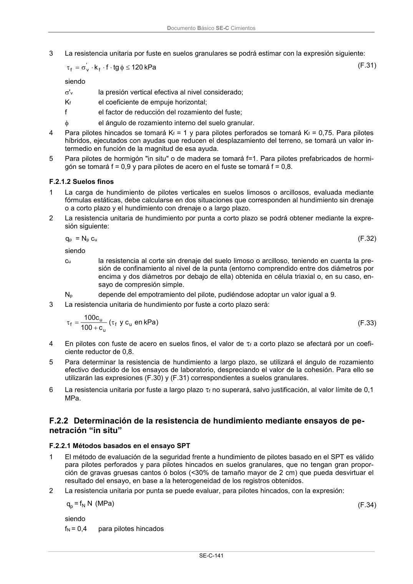

DB-SE-C Cimientos · edición 2019-12-20 · capa oficial
Documento DB-SE-C-oficial · SHA-256 del PDF a71133f4b0dca253e45ea3071c70f2a512354bcc5cd841bf89b1a502f567ac5e
Página física 146 de 165.
Copia fiel del PDF fuente · Fuente oficial
Ficha de la disposición en la fuente oficial
Formato: Texto de la página (Markdown)
Documento Básico SE-C Cimientos SE-C-141 3 La resistencia unitaria por fuste en suelos granulares se podrá estimar con la expresión siguiente: kPa 120 tg f k f ' v f (F.31) siendo 'v la presión vertical efectiva al nivel considerado; Kf el coeficiente de empuje horizontal; f el factor de reducción del rozamiento del fuste; el ángulo de rozamiento interno del suelo granular. 4 Para pilotes hincados se tomará Kf = 1 y para pilotes perforados se tomará Kf = 0,75. Para pilotes híbridos, ejecutados con ayudas que reducen el desplazamiento del terreno, se tomará un valor in- termedio en función de la magnitud de esa ayuda. 5 Para pilotes de hormigón "in situ" o de madera se tomará f=1. Para pilotes prefabricados de hormi- gón se tomará f = 0,9 y para pilotes de acero en el fuste se tomará f = 0,8. F.2.1.2 Suelos finos 1 La carga de hundimiento de pilotes verticales en suelos limosos o arcillosos, evaluada mediante fórmulas estáticas, debe calcularse en dos situaciones que corresponden al hundimiento sin drenaje o a corto plazo y el hundimiento con drenaje o a largo plazo. 2 La resistencia unitaria de hundimiento por punta a corto plazo se podrá obtener mediante la expre- sión siguiente: qp = Np cu (F.32) siendo cu la resistencia al corte sin drenaje del suelo limoso o arcilloso, teniendo en cuenta la pre- sión de confinamiento al nivel de la punta (entorno comprendido entre dos diámetros por encima y dos diámetros por debajo de ella) obtenida en célula triaxial o, en su caso, en- sayo de compresión simple. Np depende del empotramiento del pilote, pudiéndose adoptar un valor igual a 9. 3 La resistencia unitaria de hundimiento por fuste a corto plazo será: ) kPa en c y ( c 100 c 100 u f u u f (F.33) 4 En pilotes con fuste de acero en suelos finos, el valor de f a corto plazo se afectará por un coefi- ciente reductor de 0,8. 5 Para determinar la resistencia de hundimiento a largo plazo, se utilizará el ángulo de rozamiento efectivo deducido de los ensayos de laboratorio, despreciando el valor de la cohesión. Para ello se utilizarán las expresiones (F.30) y (F.31) correspondientes a suelos granulares. 6 La resistencia unitaria por fuste a largo plazo f no superará, salvo justificación, al valor límite de 0,1 MPa. F.2.2 Determinación de la resistencia de hundimiento mediante ensayos de pe- netración “in situ” F.2.2.1 Métodos basados en el ensayo SPT 1 El método de evaluación de la seguridad frente a hundimiento de pilotes basado en el SPT es válido para pilotes perforados y para pilotes hincados en suelos granulares, que no tengan gran propor- ción de gravas gruesas cantos ó bolos (<30% de tamaño mayor de 2 cm) que pueda desvirtuar el resultado del ensayo, en base a la heterogeneidad de los registros obtenidos. 2 La resistencia unitaria por punta se puede evaluar, para pilotes hincados, con la expresión: (MPa) N f = q N p (F.34) siendo fN = 0,4 para pilotes hincados
